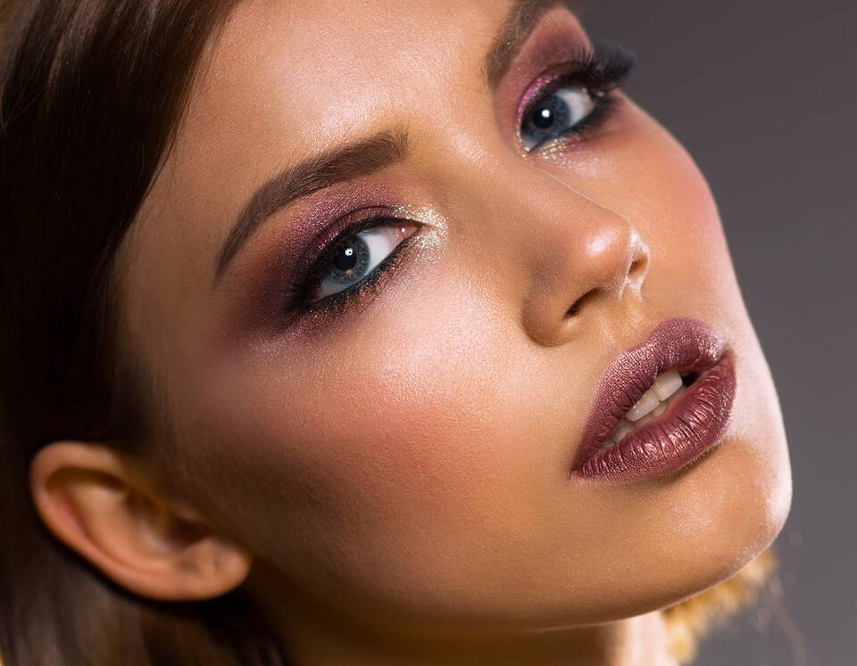
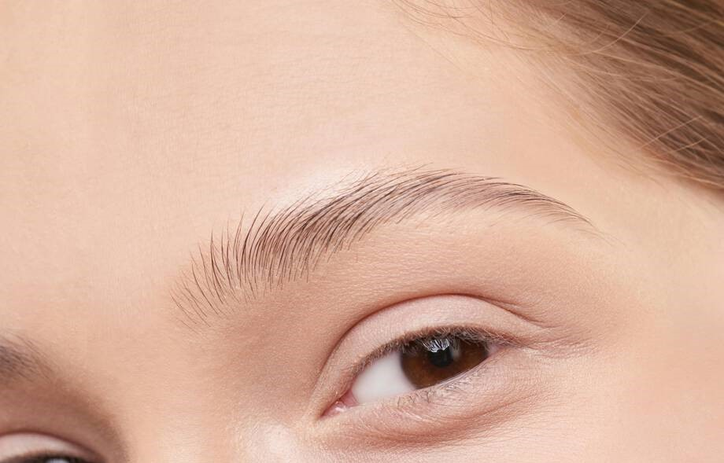
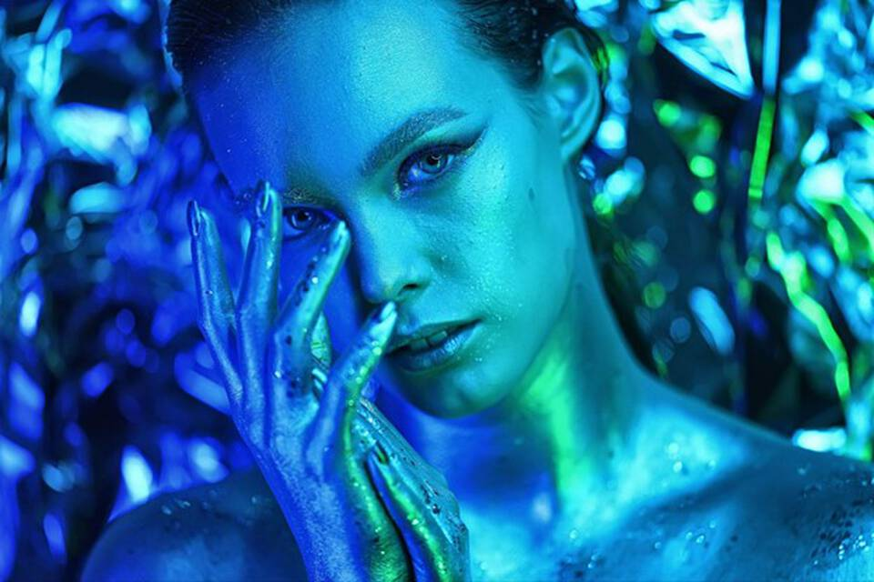

foxy eyes

Usa delineador de ojos oscuro o negro para crear una línea larga y prominente en el párpado superior. Delinea suavemente con el eyeliner para crear un efecto de ojos de zorro. Para realzar tu mirada, usa Vivid Rich Mechanical Pencil, está diseñado para brindarte un maquillaje de la más alta calidad con sus 12 tonos, lo que te permitirá crear una apariencia única y atrevida.
cejas rectas

Primero debes definir la forma natural de tu ceja,luego debes rellenar tus cejas con precisión y por ultimo, Fija las cejas con el Gel Fijador De Cejas,peinándolas hacia arriba y hacia afuera para un look más natural y definido.
Siren eyes

Aplicar sombra de ojo en todo el párpado para igualar el color, luego aplica delineador de ojos, para un mayor glamour, puedes agregar purpurina o brillantes en tu lagrimal. aplícate una máscara de pestañas para alargarlas y definirlas;perfecciona tu maquillaje de ojos de sirena con un iluminador. Úsalo en la zona del hueso de la ceja y en los lagrimales para resaltar y agregar brillo a tu mirada.